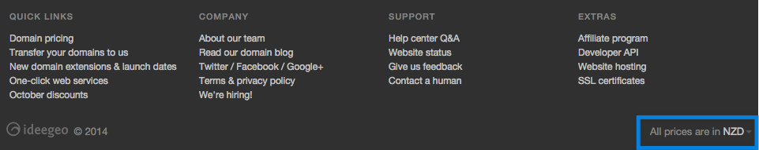

If you’ve been on the iwantmyname website lately, you might’ve noticed a change in parts of the site—a new multicurrency toggle. Now, instead of displaying prices (and accepting payments) in only USD (US Dollar), you can switch currencies to NZD (New Zealand Dollar), GBP (British Pound), AUD (Australian Dollar), and EUR (Euro). It’s a small feature, but one we’re really happy to roll out.
A Little Backstory
For the first half-decade of iwantmyname, implementing multicurrency through our upstream partner was simply too big a project for our team to handle. So, with the majority of our business coming through the US, we began our existence with USD as our payment standard.
But now we’re a bit bigger, and our customers are a bit more spread out, so we’ve officially launched our multicurrency expansion. We quietly launched it a few weeks ago, and we’re really happy with how it’s working (being based in New Zealand, it’s nice to be able to pay in NZD).
So next time you’re looking for a domain, there are three ways to change your currency: in the footer (see screenshot below), on all our price lists (like this one), and in your account payment settings. We’ve also set it up to be location aware, so new customers should automatically be assigned to their correct currency. Once switched, all prices on the site (minus the blog, which is currently static), should reflect the change.

Also, if you have any questions about multicurrency, feel free to ask. We’re always here to help.
I grew up in a booming suburb of sorts, and one of my most vivid memories (you can’t choose what sticks!) was of a strange clump of business-centric hotels that popped up just off the freeway near my house. Even to a grade-schooler, the likelihood of all these rooms filling up on a given weekend was extremely low, yet the construction marched on. Knowing the basics of supply and demand, I was baffled, so I asked my dad to explain the logic. He said, “Well… it looks like all the market researchers saw the same opportunity at the same time.”
What I’ve learned since then is that competition is good, but unless the demand is huge, some of the players will inevitably lose out. So here I am, looking at a handful of new generic top-level domains (gTLDs) related to photography, wondering A. why the world needs five extensions for the same purpose, and B. which one(s) will rise to the top.
The “why” question will have to be for a later post, but predicting popularity is a thought exercise I can get behind. So let’s lay out the contenders:
Keyword domain names were once thought of as a golden ticket to top rankings, but the general consensus in the SEO community seems to be that their power has diminished in the wake of Google’s Exact Match Domain update.
What, if any, role do keyword domains play in SEO today? Is it still worth spending tens of thousands of dollars for a category-defining domain name if it’s not an automatic ticket the front of the line?
Specifically, we want to examine:
Are keyword domain names still beneficial?
How much do they help?
In what ways do they help?
What is that help worth, in dollar terms?
If you’ve ever gone through the process of naming a website, you’ve probably struggled with this very issue—is it better for business to have your domain name stick to a brand (dominos.com) or a keyword (dominospizza.com)? I’d be the first to tell you not to worry about it—the quality of your product will eventually trump optimization in rankings—but my cavalier mentality might be getting in the way of a very real SEO benefit. Especially if your website is solely focused on a single topic or product.
Giving back has always been part of the culture at iwantmyname—from hands-on teaching overseas to supporting our local tech startup scene—but on our 5th birthday we decided to do something a little more permanent. Given that there are only ten of us, our plan of action was to help fund highly efficient aid initiatives that could do so much more for people around the world than we ever could on our own. Our pledge was to give 10 cents from each domain registered to a charity of our choosing, and our first recipient was Save the Children, who was working hard at the time to help the Philippines recover from Typhoon Haiyan (and they’re back on the ground now to help with Typhoon Hagupit).
This year, our plan is to support local initiatives in Bali, an island that was very hospitable to us during our yearly planning meeting. While in Bali, two aid initiatives were brought to our attention—Karuna Bali and IDEP.
According to ntldstats.com, there are 3,177,772 new generic top-level domains (gTLDs) registered to date. What that says about the overall popularity of the rollout is up for debate, but there’s no denying the success of some of the extensions. .XYZ, .CLUB, and a bunch of the city gTLDs are doing quite well, and even some of the less popular ones (62 at the moment) have broken the 10,000 registrations mark.
But, at least for me, looking at an overall popularity list doesn’t really say anything. I want to know what the people I identify with are using, and for that, I need some specific stats—stats from our customers. Here’s what we found.
If you talk to the communications manager (or similar position) of a brand of just about any size, you might notice a small tinge of panic in their voice. It’s all just too much. On one hand, communicating with audiences is easier than ever, with seemingly infinite platforms to engage with infinite types of customers. But on the other hand, keeping up with it all while not sounding insane is madness.
Here’s a personal example. Our primary communications goal is to build an authentic brand relationship with our customers. That may sound like an oxymoron, but it’s really not. We’re not looking to be part of your social scene, and we’ll never expect you to wake up every morning pining over what we have to say, but we do hope that when your friends ask for a domain registrar recommendation, you’re confident enough in us steer them our way. And the best way to gain your trust (aside from constantly improving our platform) is to let you in a bit—to show you what we’re focusing on, thinking about, creating, and improving.
Let’s face it, I, like many of my colleagues, have a bit of a problem. I think of the web as a blank canvas, just waiting for my ideas to populate its empty space. And every time I have a new idea, I do one thing—scramble to grab the corresponding domain name.
My ongoing quest has gotten a bit easier since the launch of the new generic top-level domains (gTLDs) (being able to get just about any name in some form is a huge time-saver), but the underlying problem still remains. If/when I lose interest trying to make small ideas flourish, I find myself sitting on a pile of empty dreams and untapped potential (at least until the domains expire).
The real hurdle is the process it takes to create and market new sites. It’s much easier today than it was a decade ago, but you still have to design them (although templates are getting better and better), brand them, come up with a consistent content strategy, create a bunch of social accounts and mailing lists, then promote the hell out of them. It’s exhausting!
There is so much more value in having everything on this website than there is in having even two or three different domains we are managing.
Further on…
The best part is when we want to launch something new or explore an idea, we just create a page and put it out there, email our list, and see what people think. Also, we don’t have to hunt for a new domain name for every idea we have. We just create a new page and boom, we’re done.
I’ve found that any time you can increase focus and decrease friction in your business you are better off.
So, stop buying new domains and start focusing your energy on one domain.
P.S. Focusing on one domain worked pretty well for Apple, it might work for you too.
Being scattered all over the world has its advantages. For one, there are no work hours, set workspaces, or dress codes. And meetings are cut to a minimum because there’s only so much time everyone is online at once.
But sometimes you need some face-to-face time to make in-person connections. To hash out real problems and create lasting solutions. So once a year, we like to meet up for a week or so and get it all out of our system. Last year we chose Fiji, which is only a short 2.5 hour flight from New Zealand, and it went so well that we stayed with the four-letter theme and packed our bags for Bali.
If you’re anything like us, you probably know all-to-well the excitement of trying out new hosted services, then linking them to a subdomain of your main domain. You might try out a platform like Desk and put it on help.domain.tld, then try another platform on support.domain.tld. And inevitably, you’ll find the one you like best and move on from there.
But so many of us make the mistake of forgetting all the unused subdomains we have. On the surface, nothing on your site is any different, but then you start noticing the credit card statements filled with services you’re not actually using. Canceling them is easy, but then there’s the domain side. Even after you cancel the billing, your unused subdomain (let’s say help.domain.tld, which was on Desk) is still being linked to the platform, and when you go to the domain, you’re met with the default platform error message.
The Nielsen ratings have long held huge sway over the business of television, but television isn’t like it used to be. So, on Tuesday, Nielsen announced that it’s expanding its ratings system to all kinds of digital content to give both its creators and advertisers a more meaningful way to measure popularity in the online era.
The most striking development in Adobe’s new system is that it’s designed for comparing disparate kinds of content. The new ratings, Nielsen says, can rank an online video next to a podcast next to an article. Unlike television or radio, the internet isn’t a medium that funnels just one format. The aim of Nielsen’s new ratings is to create a context to figure out what people care about online, regardless of what form it takes.
This is just a reminder that internet advertising is still in its infancy. It’ll be interesting to see what the internet looks like in 20 years, once the big media entities switch their primary funding from TV to the web. The last two lines of the article say it all.
The old way made a lot of people in old media a lot of money. If someone can approximate the old way for new media, maybe more of that money will start rolling in, just like it used to.